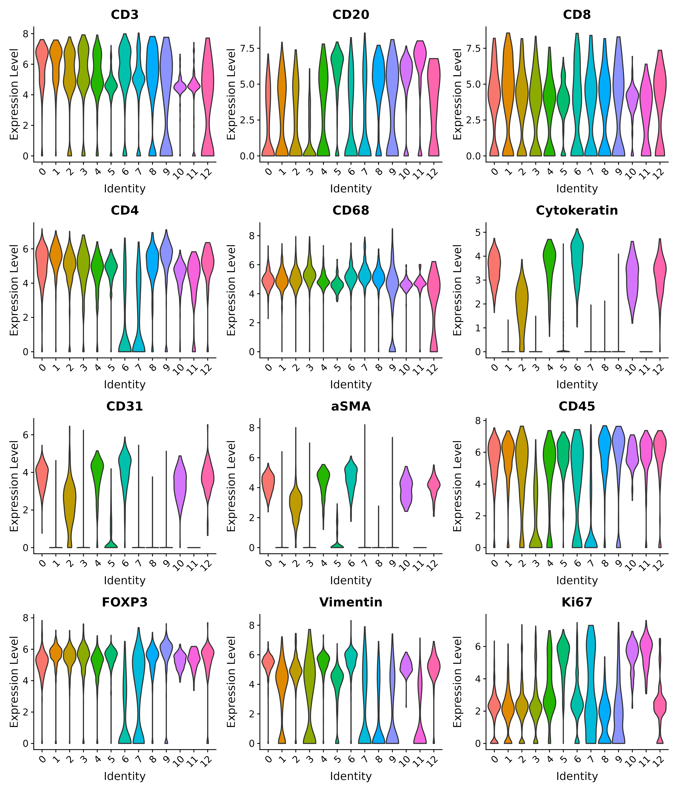
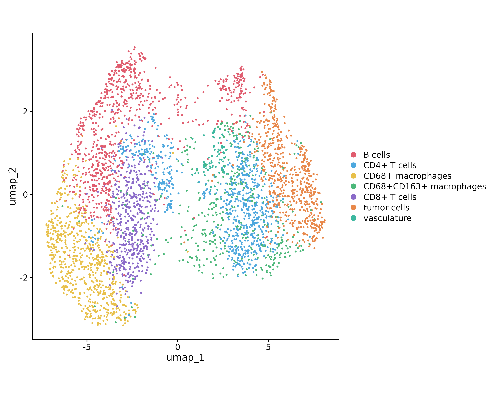

Overview
This module finds cluster markers, visualizes protein panels, and assigns readable cell-type labels. The worked example starts from clustered reg055_A data and maps Seurat clusters to biological names.
Top markers
top5 <- find_top_markers(
obj,
assay = DefaultAssay(obj),
save_path = "top5proteins.csv"
)Marker violin / heatmap / UMAP
plot_marker_violin(
obj,
markers = c("CD3", "CD20", "CD8", "CD4", "CD68", "Cytokeratin",
"CD31", "aSMA", "CD45", "FOXP3", "Vimentin", "Ki67"),
group_by = "seurat_clusters",
assay = DefaultAssay(obj),
save_path = "allmarker.png",
width = 12, height = 14
)
plot_marker_heatmap(
obj, top_markers = top5, group_by = "seurat_clusters",
assay = DefaultAssay(obj), save_path = "marker_heatmap.png"
)
plot_umap_markers(
obj, markers = head(top5$gene, 6),
output_file = "umap_markers_plot.png"
)


Annotate and plot
Assign labels with annotate_celltypes() using a cluster-to-name map informed by top markers and the original CODEX ClusterName labels:
obj <- annotate_celltypes(
obj,
cluster_ids = c("0", "1", "2", "3", "4", "5", "6", "7", "8", "9", "10", "11", "12"),
celltype_labels = c(
"CD4+ T cells", "CD8+ T cells", "CD68+CD163+ macrophages", "CD68+ macrophages",
"tumor cells", "B cells", "tumor cells", "CD68+ macrophages", "B cells",
"CD4+ T cells", "B cells", "B cells", "vasculature"
),
cluster_column = "seurat_clusters"
)
plot_annotated_umap(obj, save_path = "umap_by_celltype.png")
plot_spatial_distribution(obj, save_path = "celltype_spatial_plot.png", point.size = 0.4)

Colors stay consistent across UMAP, spatial, and network plots via assign_celltype_colors().
Save
saveRDS(obj, "reg055_A_annotated.rds")